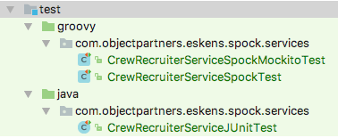

Test Often and Prosper
A Java developer's guide to Spock
WARNING: We will Mock Spock


The new frontier
We now have stakeholders asking for testing metrics
and faster deployment of features
Headline
How ___ deploys to production ___ times a day
Testing now takes less code and less time.
Testing will make you a rockstar

Rockstars prosper

Why not just use JUnit?

You could ...
You could even...
class CrewRecruiterServiceSpockMockitoTest extends Specification implements CommonCrew {
//Inject Mockito mocks into your Spock tests 😱
@InjectMocks CrewRecruiterService crewRecruiterService
@Mock PayrollService payrollService
def setup() {
MockitoAnnotations.initMocks(this);
}
void "SelectForBudget can be tested with Mockito mocks"() {
Mockito.when(payrollService.getSalary(any(CrewMember))).thenReturn(100000L)
when:
List crew = crewRecruiterService.selectForBudget(200000, ENTIRE_CREW)
then:
crew == [KIRK, SPOCK]
}
}

Why Spock kicks butt...

Easy mocking. Easy verifications.
def "set course test"() {
when:
Route results = navigationSystem.setCourse("Andoria")
then:
1 * collisionAvoidanceSystems.findRoute("Earth", "Andoria") >> {
new Route(["Hang a left at Mars",
"Turn right at Alpha Centauri A",
"Gravity assist from Midos V"])
}
results.directions.first() == "Hang a left at Mars"
}
Parameterized tests
@Unroll("A budget of #salaryCap pays for #expectedCrew")
void "SelectForBudget adds crew in priority order until budget depleted"() {
when: 'selecting crew at various salary cap levels'
def crew = crewRecruiterService.selectForBudget(salaryCap, ENTIRE_CREW)
then: 'we get back crew we can afford in priority order'
crew == expectedCrew
where:
salaryCap || expectedCrew
0 || []
100000 || [KIRK]
299999 || [KIRK, SPOCK]
MAX_VALUE || ENTIRE_CREW
}
Spock is Groovy

1 * mockService.findOfficers(crewMembers) >> {
List crewMembers ->
crewMembers.findResults {
it.rank?.commandLevel < 5
}
}

This is Groovy

def KIRK = new CrewMember(firstName: "James", lastName: "Kirk")
Range oneToTen = (1..10) // [1, 2, 3, 4, 5, 6, 7, 8, 9, 10]
def crewNames = ["Kirk", "Spock", "Ensign Redshirt"]
List crew = crewNames.collect { String lastName ->
long yos = getRandomFromRange(oneToTen) //oneToTen in scope
new CrewMember(lastName: lastName, yearsOfService: yos)
}
// IT, " vs ', interpolation of strings, elvis, null-safe
crew.each { println "${it.firstName?:''} $it.lastName - $it.rank?.salary" }
assert KIRK != SPOCK // == is .equals, === for references
http://groovy-lang.org/differences.html
http://groovy-lang.org/syntax.html
@Subject Starship starship = new Starship()
@Collaborator PayrollService payrollService = Mock()
@Shared def CREW = ["Kirk", "Spock", "Ensign Redshirt"].asImmutable()
@Collaborator def crewManager = Spy(CrewManager, constructorArgs: [CREW])
def "A very descriptive name for our test"() {
def currentCrew = ['RebelSpy'] + CREW /* given: */
expect:
currentCrew.size() == 4
when:
def result = starship.findIntruders()
then:
(1..4) * payrollService.getSalary(_) //default returns falsey
1 * crewManager.getExpectedCrew(starship) //concrete call
(1.._) * crewManager.isSpy(starship, _ as CrewMember) >> { ship, cm ->
return ship.name == 'Enterprise' && cm.lastName.contains('Spy')
}
result.lastName == 'RebelSpy'
}

This is Spock
Man that's Groovy

Spock Deep Dive

Basic structure
class MyFirstSpockSpec extends Specification {
StringUtil stringUtil = new StringUtil()
// optional setup / teardown methods
def setup() {} // run before every feature method
def cleanup() {} // run after every feature method
def setupSpec() {} // run before the first feature method
def cleanupSpec() {} // run after the last feature method
void testContains() {
expect:
stringUtil.contains("Spock", "S")
}
}
Spec fixture setup
class SetupMethodsAreNotNeededSpec extends MyBaseSpecification {
StringUtil stringUtilOne = new StringUtil()
StringUtil stringUtilTwo
@Shared NumberUtil numberUtilOne = new NumberUtil()
@Shared NumberUtil numberUtilTwo
def setup() {
//super.setup() //calling super for Fixture methods isn't needed
stringUtilTwo = new StringUtil()
}
def setupSpec() {
numberUtilTwo = new NumberUtil() //instance fields must be @Shared
}
}
Feature method structure
void testSpockIsCool() {
// The setup: or given: labels are optional
def crew = [KIRK, SPOCK, SCOTTY]
expect: "the obvious answer from a fanboy"
SPOCK == fanboy.whoIsTheCoolest(crew)
when: "Spock isn't an option"
fanFav = fanboy.whoIsTheCoolest([KIRK, SCOTTY])
then: "Kung Fu is cool"
fanFav == KIRK
and: "for visual separation"
fanFav.name.contains('James')
cleanup: "optional clean up"
SPOCK.mindMeld(fanboy)
}
testVulcanFindFunny() { ... }

"Vulcans do not get mad magazine"() { ... }
Assertions
void "expect assertions to be truthy"() {
expect:
SPOCK.fullName == "S'chn T'gai Spock"
SPOCK.isCool() && ! SPOCK.isFunny()
SPOCK.rank > 0
SPOCK.rank
when:
SPOCK.tellJoke()
then:
thrown(IllogicalRequestException)
when:
SPOCK.writeTests()
then:
notThrown(IllogicalRequestException)
noExceptionThrown() // Rarely used
}
Grouping assertions by subject
void "Registering a crew member is done completely"() {
when:
def crewMember = ship.getCrewMemberById(1)
then:
with(crewMember) {
firstName == 'James'
lastName == 'Kirk'
rank.title == 'Captain'
}
}
Assertions in Helpers
void "getCrew returns the expected size of valid crew members"() {
when:
def crew = ship.getCrew()
then:
crew.size() == 12
crew.each { isValidCrewMember(it) }
// This would not tell you _which_ crewMember failed the assertion
// crew.every { crewMember.fullName?:'' != '' }
}
void isValidCrewMember(crewMember) {
assert crewMember.fullName?:'' != ''
}
Failures
Condition not satisfied:
crew.collect { it.fullName }.join(';') == [KIRK, RED_SHIRT].collect { it.fullName }.join(';')
| | | | | | | |
| [James Kirk] James Kirk| Kirk Doe [James Kirk, John Doe] James Kirk;John Doe
[Kirk] false
9 differences (52% similarity)
James Kirk(---------)
James Kirk(;John Doe)
at com.objectpartners.eskens.spock.services.CrewRecruiterServiceSpockTest.
Crew has a red shirt(CrewRecruiterServiceSpockTest.groovy:76)
com.objectpartners.eskens.spock.services.CrewRecruiterServiceSpockTest > Crew has a red shirt FAILED
org.spockframework.runtime.SpockComparisonFailure at CrewRecruiterServiceSpockTest.groovy:76
1 test completed, 1 failed
:test FAILED
Parameterized tests IN DEPTH

A simple parameterized test example
@Unroll("A budget of #salaryCap pays for #expectedCrew")
void "SelectForBudget adds crew in priority order until budget depleted"() {
given: 'a flat rate of 100000 per member'
payrollService.getSalary(_) >> 100000
when: 'selecting crew at various salary cap levels'
def crew = crewRecruiterService.selectForBudget(salaryCap, ENTIRE_CREW)
then: 'we get back crew we can afford in priority order'
crew == expectedCrew
where:
salaryCap || expectedCrew
0 || []
100000 || [KIRK]
299999 || [KIRK, SPOCK]
MAX_VALUE || ENTIRE_CREW
}
Iterables as params

def "spock can maths"() {
expect:
[a,b].sum(0) == c
where:
a << [2, 3, 4]
b << (2..6).step(2)
c << "4,7,10".split(',')
}
Spock Modules & Extensions

Spring Module
Provides Spring integration so beans can be injected into integration specs
Write your own extension
Or borrow ones like the great subject/collaborator extension
Some existing extensions
@Timeout(5) //defaults to secs, or (value = 5, unit = MILLISECONDS)
@Use(DiscoMixin)
@Issue('BUG-1701')
void "is Spock"() {
expect: SPOCK.dance() == "Doin' the Hustle"
}
Conditional Testing
@Ignore("Optional description")
@IgnoreRest //Only run tests annotated w/ this
@IgnoreIf({ System.getProperty("os.name").contains("borg") })
@Requires({ os.holodeck })
@PendingFeature
def "Failing tests marked as skipped"() { expect: false }
@PendingFeature // Failing Test! No longer pending :-)
def "marks data driven feature where all iterations pass as _failed!_"() {
expect: test
where: test << [true, true, true]
}
Testing a Testing Framework
def "@PendingFeature marks data driven feature where all iterations pass as failed"() {
when:
runner.runWithImports("""
class Foo extends Specification {
@PendingFeature
def bar() {
expect: test
where:
test << [true, true, true]
}
}
""")
then:
AssertionError e = thrown(AssertionError)
e.message == "Feature is marked with @PendingFeature but passes unexpectedly"
}
That's gangster

Thank You